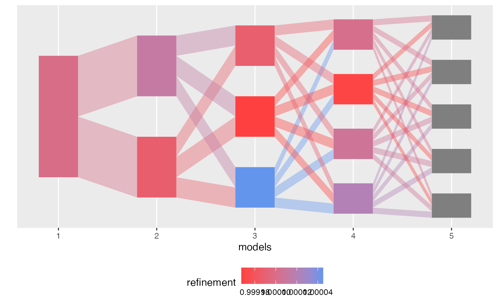

Align topics from distinct LDA models
align_topics.RdThis function takes a list of LDA models and returns an object of class
alignment. Each element in the models list must be itself a named
list, corresponding to the mixed memberships ($gamma) and topics
($beta). The resulting alignment object can be plotted using `plot`
and its weights can be extracted using the `weights` accessor function. See
the documentation for class alignment for further details.
align_topics(models, method = "product", ...)
Arguments
| models | (required) A list of LDA models object. Each list component
must be a list with two named entries, $gamma (containing mixed memberships)
and $beta (containing topic parameters in log sapce). See
|
|---|---|
| method | (required) Either |
| ... | (optional) Further keyword arguments passed to the weight
function. For example, passing |
Value
An object of class alignment providing the weights between
every pair of topics of each model pairs in the input edgelist
(comparisons).
See also
alignment
Examples
library(purrr) data <- rmultinom(10, 20, rep(0.1, 20)) lda_params <- setNames(map(1:5, ~ list(k = .)), 1:5) lda_models <- run_lda_models(data, lda_params)#>#>#>#>#>alignment <- align_topics(lda_models) alignment#> # An alignment: 5 models, 15 topics: #> # A tibble: 6 x 8 #> m m_next k k_next weight document_mass bw_weight fw_weight #> <fct> <fct> <int> <int> <dbl> <dbl> <dbl> <dbl> #> 1 1 2 1 1 0.500 10.0 1 0.500 #> 2 1 2 1 2 0.500 10.0 1 0.500 #> 3 1 3 1 1 0.333 6.67 1 0.333 #> 4 1 3 1 2 0.333 6.67 1 0.333 #> 5 1 3 1 3 0.333 6.67 1 0.333 #> 6 1 4 1 1 0.250 5.00 1 0.250 #> # … with 79 more rowsalign_topics(lda_models, comparisons = "all")#> # An alignment: 5 models, 15 topics: #> # A tibble: 6 x 8 #> m m_next k k_next weight document_mass bw_weight fw_weight #> <fct> <fct> <int> <int> <dbl> <dbl> <dbl> <dbl> #> 1 1 2 1 1 0.500 10.0 1 0.500 #> 2 1 2 1 2 0.500 10.0 1 0.500 #> 3 1 3 1 1 0.333 6.67 1 0.333 #> 4 1 3 1 2 0.333 6.67 1 0.333 #> 5 1 3 1 3 0.333 6.67 1 0.333 #> 6 1 4 1 1 0.250 5.00 1 0.250 #> # … with 79 more rowstopics(alignment)#> # A tibble: 15 x 7 #> m k mass prop branch coherence refinement #> <fct> <int> <dbl> <dbl> <fct> <dbl> <dbl> #> 1 1 1 20 1 5 0.321 1 #> 2 2 1 10.0 0.500 1 0.361 0.534 #> 3 2 2 10.0 0.500 5 0.375 0.534 #> 4 3 1 6.67 0.333 1 0.409 0.401 #> 5 3 2 6.67 0.333 3 0.399 0.434 #> 6 3 3 6.67 0.333 5 0.373 0.373 #> 7 4 1 5.00 0.250 1 0.382 0.325 #> 8 4 2 5.00 0.250 3 0.409 0.309 #> 9 4 3 5.00 0.250 4 0.400 0.321 #> 10 4 4 5.00 0.250 5 0.334 0.304 #> 11 5 1 4.00 0.200 1 0.317 1 #> 12 5 2 4.00 0.200 2 0 1 #> 13 5 3 4.00 0.200 3 0.375 1 #> 14 5 4 4.00 0.200 4 0.400 1 #> 15 5 5 4.00 0.200 5 0.290 1#> # A tibble: 85 x 8 #> m m_next k k_next weight document_mass bw_weight fw_weight #> <fct> <fct> <int> <int> <dbl> <dbl> <dbl> <dbl> #> 1 1 2 1 1 0.500 10.0 1 0.500 #> 2 1 2 1 2 0.500 10.0 1 0.500 #> 3 1 3 1 1 0.333 6.67 1 0.333 #> 4 1 3 1 2 0.333 6.67 1 0.333 #> 5 1 3 1 3 0.333 6.67 1 0.333 #> 6 1 4 1 1 0.250 5.00 1 0.250 #> 7 1 4 1 2 0.250 5.00 1 0.250 #> 8 1 4 1 3 0.250 5.00 1 0.250 #> 9 1 4 1 4 0.250 5.00 1 0.250 #> 10 1 5 1 1 0.200 4.00 1 0.200 #> # … with 75 more rowsmodels(alignment)#> $`1` #> $`1`$beta #> [,1] [,2] [,3] [,4] [,5] [,6] [,7] #> [1,] -2.302585 -2.302585 -2.302585 -2.302585 -2.302585 -2.302585 -2.302585 #> [,8] [,9] [,10] #> [1,] -2.302585 -2.302585 -2.302585 #> #> $`1`$gamma #> [,1] #> [1,] 1 #> [2,] 1 #> [3,] 1 #> [4,] 1 #> [5,] 1 #> [6,] 1 #> [7,] 1 #> [8,] 1 #> [9,] 1 #> [10,] 1 #> [11,] 1 #> [12,] 1 #> [13,] 1 #> [14,] 1 #> [15,] 1 #> [16,] 1 #> [17,] 1 #> [18,] 1 #> [19,] 1 #> [20,] 1 #> #> #> $`2` #> $`2`$beta #> [,1] [,2] [,3] [,4] [,5] [,6] [,7] #> [1,] -2.402850 -2.526673 -2.377225 -2.626843 -2.329864 -3.154429 -2.295864 #> [2,] -2.211387 -2.119488 -2.233072 -2.057932 -2.276008 -1.849045 -2.309358 #> [,8] [,9] [,10] #> [1,] -1.976006 -1.962113 -1.933281 #> [2,] -2.791250 -2.823403 -2.895194 #> #> $`2`$gamma #> [,1] [,2] #> [1,] 0.5039250 0.4960750 #> [2,] 0.5013850 0.4986150 #> [3,] 0.4951164 0.5048836 #> [4,] 0.5042990 0.4957010 #> [5,] 0.4992663 0.5007337 #> [6,] 0.4954542 0.5045458 #> [7,] 0.4983745 0.5016255 #> [8,] 0.4995485 0.5004515 #> [9,] 0.5073525 0.4926475 #> [10,] 0.5011523 0.4988477 #> [11,] 0.4992879 0.5007121 #> [12,] 0.5024545 0.4975455 #> [13,] 0.5023408 0.4976592 #> [14,] 0.4988352 0.5011648 #> [15,] 0.4995923 0.5004077 #> [16,] 0.4997541 0.5002459 #> [17,] 0.4967063 0.5032937 #> [18,] 0.4984882 0.5015118 #> [19,] 0.5000833 0.4999167 #> [20,] 0.4965801 0.5034199 #> #> #> $`3` #> $`3`$beta #> [,1] [,2] [,3] [,4] [,5] [,6] [,7] #> [1,] -2.179836 -2.324757 -2.476199 -3.356632 -2.365617 -3.368588 -2.146354 #> [2,] -3.167168 -3.039052 -2.162976 -1.598736 -2.285199 -2.031592 -2.758356 #> [3,] -1.931972 -1.868462 -2.293122 -2.765572 -2.259940 -2.006608 -2.122617 #> [,8] [,9] [,10] #> [1,] -1.726233 -2.204724 -1.989641 #> [2,] -3.091148 -1.953046 -2.213701 #> [3,] -2.569130 -3.040014 -2.920049 #> #> $`3`$gamma #> [,1] [,2] [,3] #> [1,] 0.3382117 0.3277453 0.3340430 #> [2,] 0.3344828 0.3318513 0.3336659 #> [3,] 0.3311100 0.3336228 0.3352672 #> [4,] 0.3343247 0.3357517 0.3299237 #> [5,] 0.3327743 0.3336721 0.3335536 #> [6,] 0.3309031 0.3330183 0.3360787 #> [7,] 0.3339975 0.3313940 0.3346085 #> [8,] 0.3317077 0.3362700 0.3320224 #> [9,] 0.3387621 0.3295834 0.3316546 #> [10,] 0.3316418 0.3374541 0.3309042 #> [11,] 0.3321898 0.3338565 0.3339537 #> [12,] 0.3340808 0.3351078 0.3308114 #> [13,] 0.3335265 0.3348742 0.3315993 #> [14,] 0.3330897 0.3329064 0.3340040 #> [15,] 0.3314306 0.3360321 0.3325373 #> [16,] 0.3345174 0.3314440 0.3340386 #> [17,] 0.3318128 0.3337535 0.3344337 #> [18,] 0.3333941 0.3317254 0.3348805 #> [19,] 0.3346387 0.3291282 0.3362330 #> [20,] 0.3300574 0.3375824 0.3323602 #> #> #> $`4` #> $`4`$beta #> [,1] [,2] [,3] [,4] [,5] [,6] [,7] #> [1,] -1.980596 -2.383707 -2.312304 -3.618575 -2.428002 -3.566055 -2.217306 #> [2,] -2.939299 -3.049636 -1.908925 -1.809775 -2.260603 -2.166092 -2.772130 #> [3,] -3.604185 -2.182035 -3.462967 -1.833411 -2.227756 -1.926701 -2.163142 #> [4,] -1.704279 -1.912925 -2.109162 -3.003459 -2.305264 -2.193678 -2.174777 #> [,8] [,9] [,10] #> [1,] -1.652340 -2.157028 -2.195530 #> [2,] -2.999742 -1.829589 -2.342678 #> [3,] -2.538817 -2.606411 -1.912877 #> [4,] -2.530261 -2.995778 -3.101405 #> #> $`4`$gamma #> [,1] [,2] [,3] [,4] #> [1,] 0.2522056 0.2461093 0.2519517 0.2497335 #> [2,] 0.2512276 0.2495843 0.2485180 0.2506701 #> [3,] 0.2488246 0.2499950 0.2501641 0.2510162 #> [4,] 0.2498270 0.2508620 0.2517998 0.2475111 #> [5,] 0.2493654 0.2502544 0.2504678 0.2499124 #> [6,] 0.2482398 0.2495966 0.2509072 0.2512564 #> [7,] 0.2502486 0.2481698 0.2512542 0.2503275 #> [8,] 0.2489037 0.2519244 0.2500391 0.2491328 #> [9,] 0.2546525 0.2493265 0.2458412 0.2501797 #> [10,] 0.2491729 0.2531082 0.2486768 0.2490422 #> [11,] 0.2496856 0.2512107 0.2480351 0.2510686 #> [12,] 0.2506856 0.2509760 0.2501051 0.2482333 #> [13,] 0.2495490 0.2507050 0.2512122 0.2485338 #> [14,] 0.2500133 0.2495208 0.2501309 0.2503349 #> [15,] 0.2482327 0.2512140 0.2516290 0.2489242 #> [16,] 0.2510149 0.2491107 0.2494821 0.2503922 #> [17,] 0.2490522 0.2499145 0.2505602 0.2504731 #> [18,] 0.2500659 0.2493498 0.2496513 0.2509330 #> [19,] 0.2506884 0.2475488 0.2495973 0.2521656 #> [20,] 0.2483470 0.2515585 0.2499886 0.2501059 #> #> #> $`5` #> $`5`$beta #> [,1] [,2] [,3] [,4] [,5] [,6] [,7] #> [1,] -1.825246 -2.693151 -2.123342 -3.527364 -2.331642 -3.371002 -2.193887 #> [2,] -3.068116 -1.523342 -3.347193 -2.479890 -2.566898 -3.773393 -2.204284 #> [3,] -2.882362 -3.401275 -1.778604 -1.775064 -2.231969 -2.009976 -2.811928 #> [4,] -3.538331 -2.535355 -3.367483 -1.798252 -2.171909 -1.739224 -2.202769 #> [5,] -1.573277 -2.285824 -1.952879 -2.961213 -2.255356 -2.016792 -2.229116 #> [,8] [,9] [,10] #> [1,] -1.930405 -2.329295 -1.989868 #> [2,] -1.610071 -1.726902 -3.547765 #> [3,] -3.297718 -2.081910 -2.213993 #> [4,] -2.840122 -2.838076 -1.745428 #> [5,] -2.820375 -3.183203 -2.980914 #> #> $`5`$gamma #> [,1] [,2] [,3] [,4] [,5] #> [1,] 0.2005566 0.2035629 0.1969014 0.2005654 0.1984137 #> [2,] 0.2007249 0.2004040 0.1993074 0.1988553 0.2007085 #> [3,] 0.1992124 0.1991941 0.2003226 0.2003144 0.2009565 #> [4,] 0.2000444 0.1998036 0.2006717 0.2014523 0.1980281 #> [5,] 0.1999920 0.1984461 0.2005475 0.2007537 0.2002607 #> [6,] 0.1987922 0.2004068 0.1997472 0.2005221 0.2005317 #> [7,] 0.1998368 0.2002977 0.1988289 0.2009550 0.2000817 #> [8,] 0.1996403 0.1985827 0.2016347 0.2003668 0.1997755 #> [9,] 0.2020497 0.2034002 0.1986901 0.1961078 0.1997522 #> [10,] 0.2001027 0.1984103 0.2023281 0.1992587 0.1999003 #> [11,] 0.2004348 0.1986626 0.2009760 0.1986829 0.2012437 #> [12,] 0.1996381 0.2018211 0.2001817 0.1998259 0.1985332 #> [13,] 0.2000110 0.1988645 0.2005822 0.2013676 0.1991746 #> [14,] 0.1996281 0.2011046 0.1994100 0.1998405 0.2000168 #> [15,] 0.1991938 0.1987262 0.2008519 0.2017121 0.1995160 #> [16,] 0.2000785 0.2012185 0.1993805 0.1993521 0.1999704 #> [17,] 0.1994847 0.1988660 0.2003351 0.2007349 0.2005793 #> [18,] 0.1997843 0.2012994 0.1995751 0.1992147 0.2001265 #> [19,] 0.2009911 0.1995221 0.1982079 0.1997485 0.2015303 #> [20,] 0.1996958 0.1975215 0.2015509 0.2003962 0.2008356 #> #>